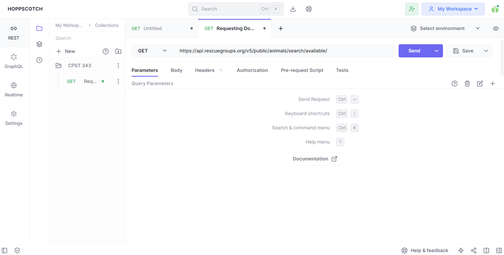

Workshop: Introduction to JSON
Translating text into a structured data exchange format
Instructor: Chris Fulton

Agenda
- First Hour
- Explaining, Interpreting + Accessing JSON data
- Practice Activity
- Retrieving data from JSON data structure
- [15 min. break]
- Second Hour
- Requesting data from a REST API
- Making a Http Request to REST API call Activity
- Understanding and Visualizing API data using a BI tool
- Q and A
Learning Objectives
- You will learn how to:
- Convert text into JSON format
- Retrieve specific data stored in JSON format
- Interpret JSON data
- Execute an HTTP request to interact with a RESTful API
- Organize JSON data for meaningful insights through visualization using AppSmith
- Skills:
- JSON, RESTful Architecture, Client/Service Architecture, Data Visualization
What is JSON?
JSON Use Cases
a lightweight text-based open standard designed for human-readable data exchange

Databases | Configuration | REST API
JSON Rules and Data Types

Key/value -> JSON consist of stacked key/value pairs. Each key/value pair ends with a comma with the exception of the last key/value pair.
Quotations -> All keys should have quotations
Keys -> no spaces in keys + good practice to make keys lowercase
Nesting -> key/value pairs can be nested
Data types -> certain syntax needed for values based on the data
JSON Rules and Data Types
String
"title": "Intro. to JSON"Number
"participants": 12Null
"badged_event": nullBoolean
"is_online": trueArray
"skills": ["JSON", "REST API"]Object
"info":{
"time": "9AM",
"hours": 3,
"isOK": false
}
Practice Activity

Retrieving JSON
//Write pseudocode here
What is REST API?
REST Principles or Constraints

Source: https://medium.com/geekculture/rest-architectural-constraints-495a50ae0651
Client - Server Arch.
Separates Client and Server - Client makes request
Uniform Interface
Consistent way of Interaction - HTTP verbs
Stateless
No information from previous request
Cachable
Response determines if cachable or not. Determines clients ability to reuse data
Layered System Arch.
Use of Intermidiary servers(proxies, load balancers, etc..)
Representation
Various Formats - various formats(HTML, JSON, XML, etc..)
Web Services
Software systems designed to allow interaction between different applications or systems over a network, typically the internet. They provide a standardized way for software components to communicate and exchange data, enabling the integration of disparate systems and platforms
A few RESTFul API's
Web Service Tools
Considerations
- Obtaining an API Key
- Paid and Free Services
- Request Limits
Making a Request
URI Query syntax | Http verbs | Query Paramters | Authorization | Header Paramters
https://data.cityofchicago.org/resource/d6ui-3yap.json
GET | POST | PUT | DELETE
Practice Activity
Follow the steps to make a successful request to the college scorecard API
Step 1
Navigate to https://api.data.gov/signup/ to sign up for an API Key. Check your email and copy the api key. You will need to provide the API Key as a key/parameter as part of your request.
Step 2
Open a new browser and navigate to hoppscotch.io and follow the steps on the next slide.
Step 3
Review and Interpret the data by return from request. Navigating to the next two slides select an option for the two multiple choice questions.
Practice Activity Steps
1. Creating a Collection of Queries -> Click the new button and name the collection CollegeScoreCard API queries
2. Create a Request Instance -> Select the three stacked dots symbol next to the folder and select 'New Request'. Name the request "General School Query". A new tab will display with the request name you entered. Underneath the tab, Make sure 'GET' is preset as the dropdown option. Remove the URL 'https://echo.hoppscotch.io' and add the URL below.
https://api.data.gov/ed/collegescorecard/v1/schools.json
3. Adding API Key for Authorization -> Your API key can be added as either as query parameters or by using the 'Authorization' tab. Select the Paramters tab, and enter 'api_key' for the key and enter the key provided to you via email as the value. Press the 'SAVE' button and then press the 'SEND' button.
4. Narrowing Search -> Using GitHub Documentation found at this [link](https://github.com/RTICWDT/open-data-maker/blob/master/API.md). Create a new request under your CollegeScoreCard API queries that limits the returned results to schools in 'Chicago' with the accreditor as 'Higher Learning Commission'
5. Complete Multiple Choice questions -> Anwser the two multiple choice questions on the following slides.
College Scorecard API Question #1
According to the late work policy if needed, how many days are you permitted to have beyond the due date:
College Scorecard API Questions #2
According to the late work policy if needed, how many days are you permitted to have beyond the due date:
Visualizing JSON Data
Low-code/No-Code Dev. Environments + BI Tools


Process and Steps
1. git init -> Initializes git into project folder
2. Make the necessary changes to the application. Save the file and render in browser to observe added functionality.
3. git status -> Checks the status to see status of files in directory
4. git add . -> Adds files to staging area. In preparation to be committed.
5. git status -> Check status again to see if file(s) were added to staging area.
6. git commit -m "adding category" -> Document the change by committing changes and addding a brief message.
7. git log -> To view commit history and timestamp.
Data Type Activity
According to the late work policy if needed, how many days are you permitted to have beyond the due date: